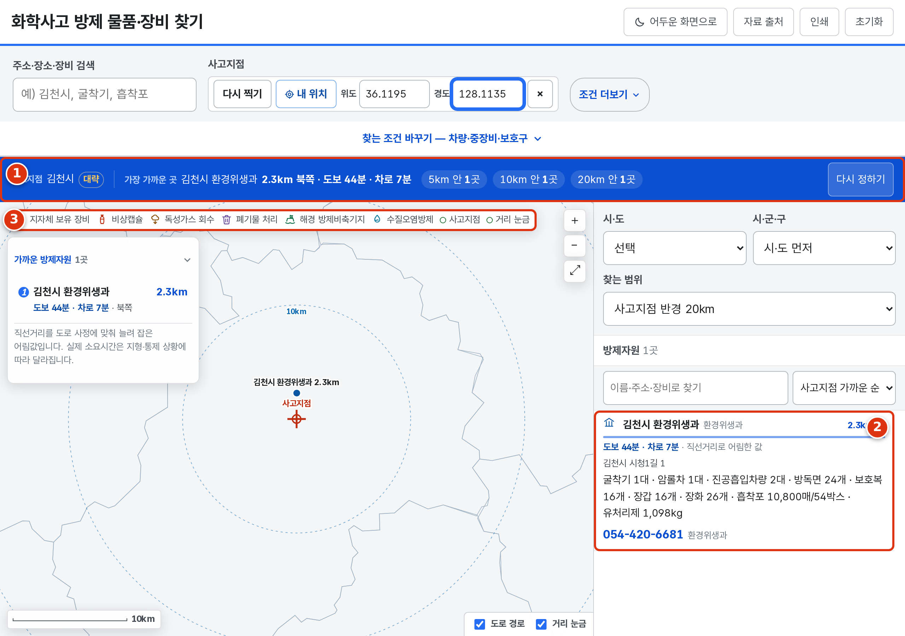
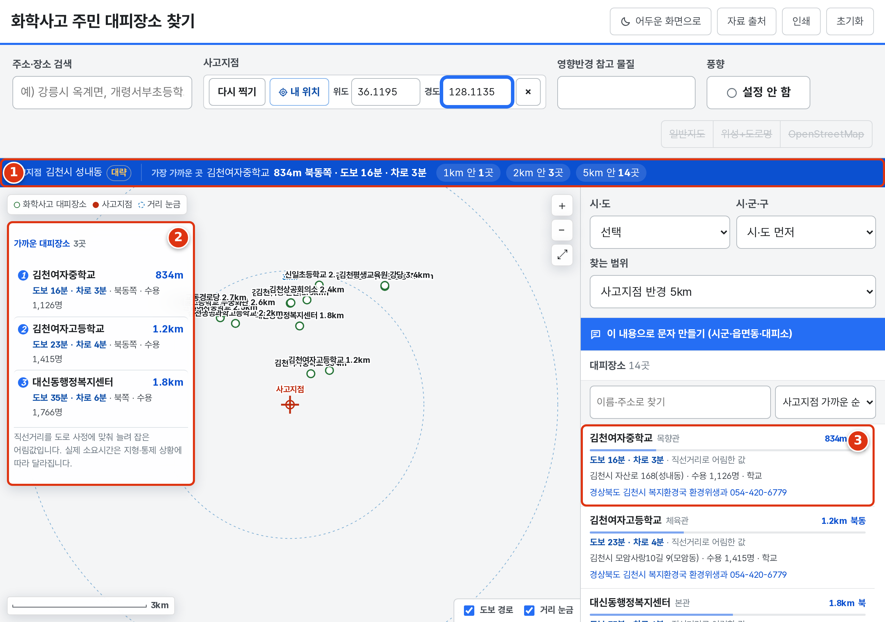
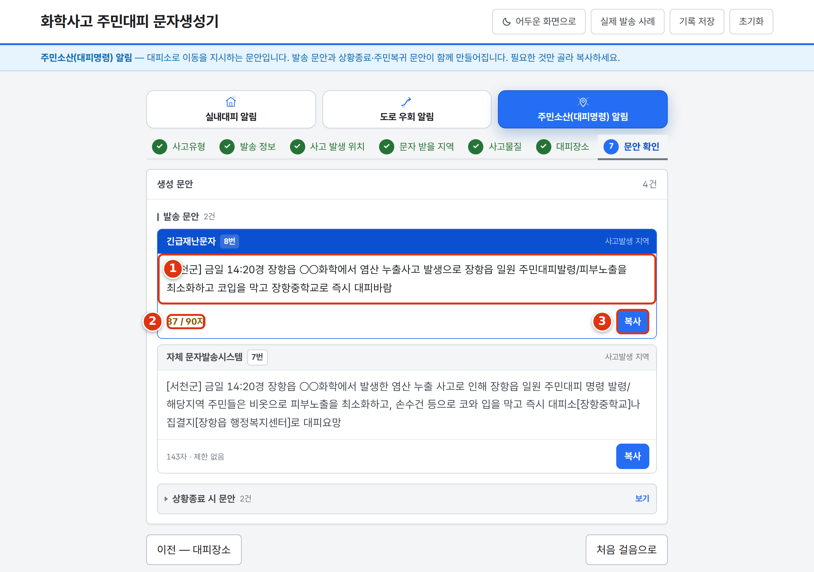

chem-safety-kr.pages.dev



크롬 · 엣지 → ⋮ → 바로가기 만들기
크롬 → ⋮ → 홈 화면에 추가
사파리 → 공유 ⬆ → 홈 화면에 추가
| 주소가 안 열림 | 업무망이 막은 것입니다. 휴대전화(LTE)로 열거나 망분리PC용 단일파일을 쓰세요. |
| 지도에 선만 보임 | 배경지도만 못 받은 것입니다. 대피장소 · 목록 · 거리는 그대로 나옵니다. |
| 문안이 안 만들어짐 | 덜 채운 칸이 있습니다. 화면이 알려 주는 칸을 채우세요. |
| 화면이 깨져 보임 | 크롬 · 엣지로 여세요. 인터넷 익스플로러에서는 나오지 않습니다. |